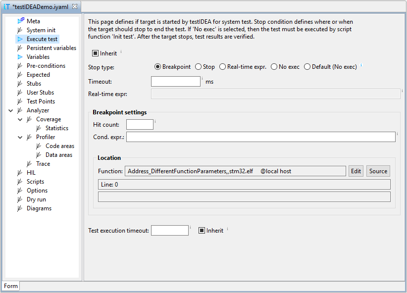

The System init section specifies where to stop the target before test. It does not need to be specified, if target is already initialized and execution point set as expected.
The Execute test section must be specified if we want the test to be executed by testIDEA. If it is not specified (option No exec is selected), then script function Init test should be specified, and should run and stop the target to execute the test. When target stops, target state (variables, ...) is obtained and compared to tests requirements. Analyzer is also stopped and expected values verified.
